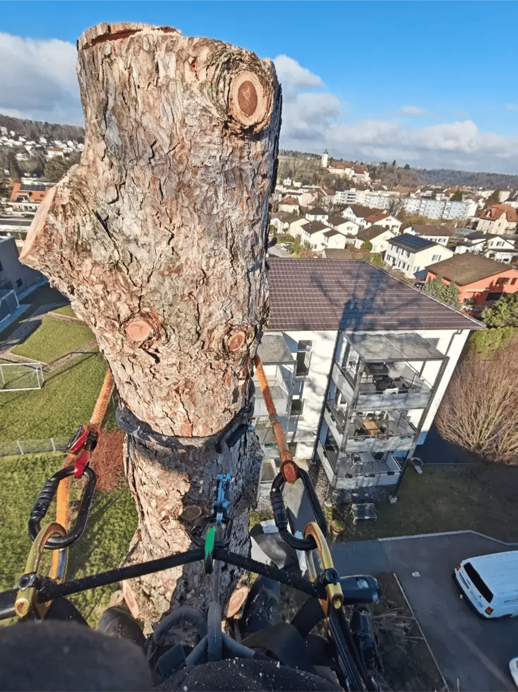
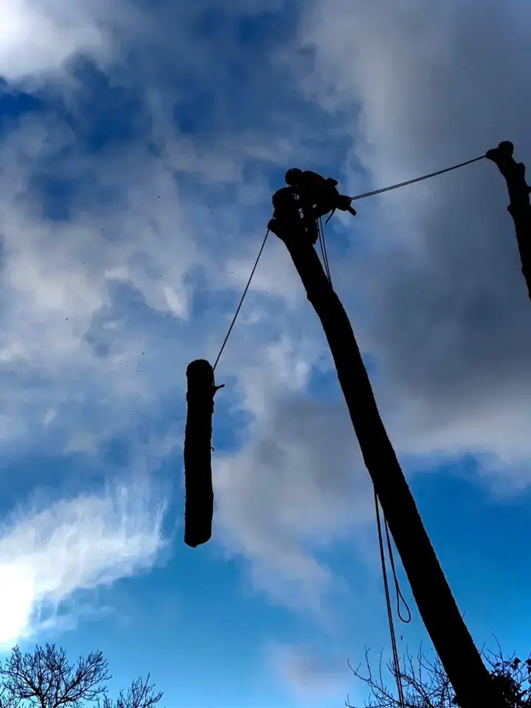
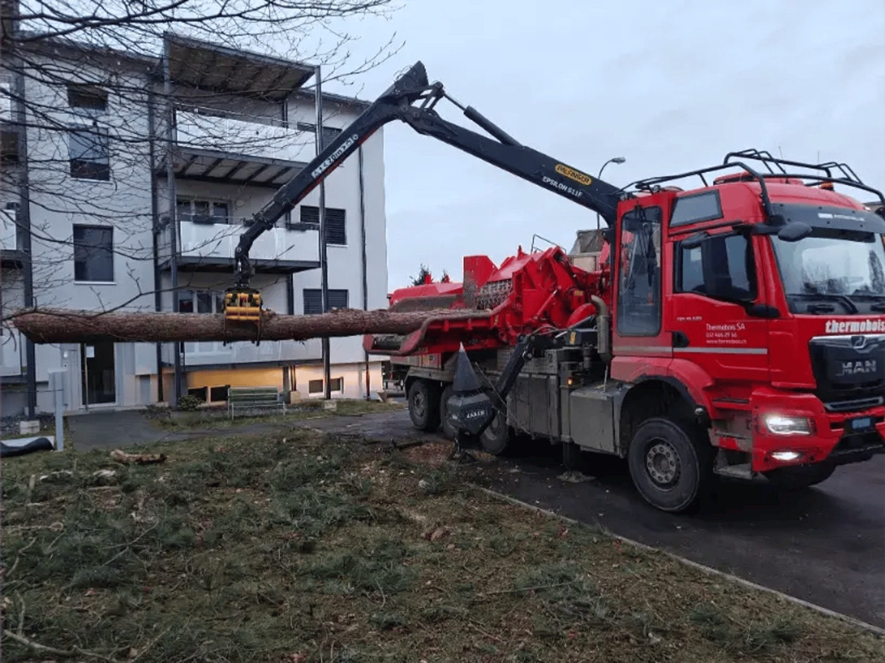
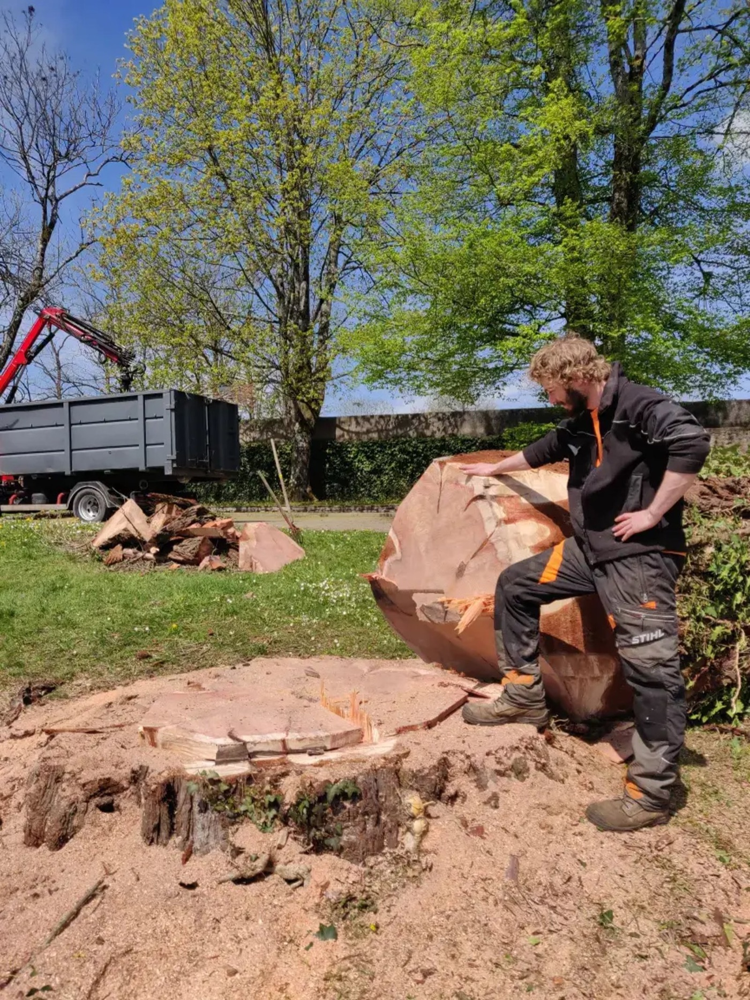
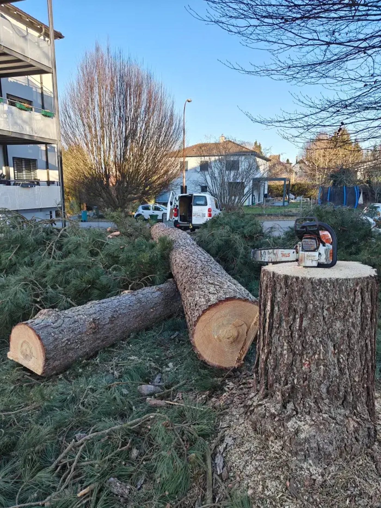
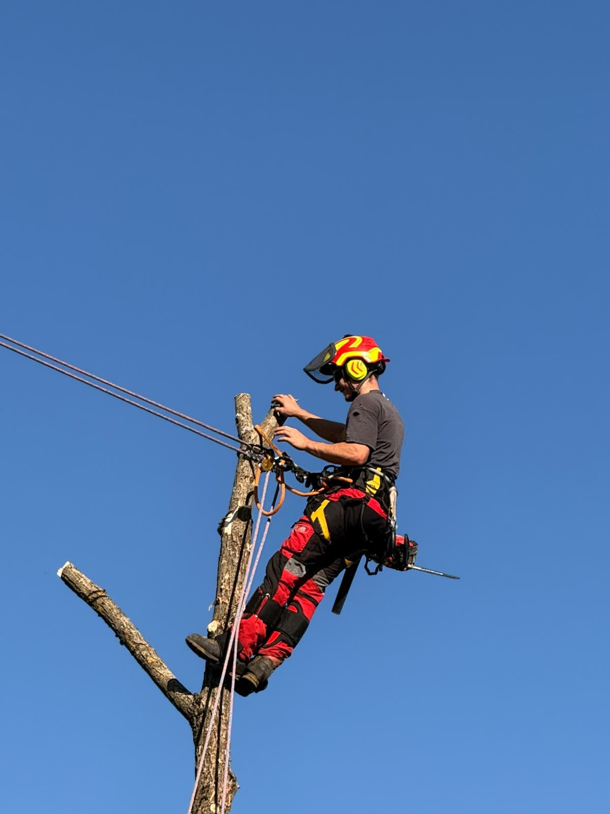
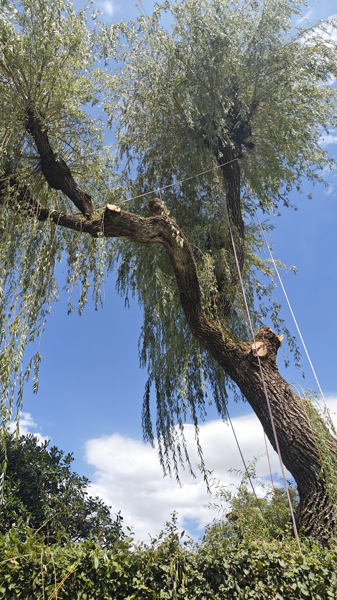

Abattage d'arbres en toute sécurité, même en espace restreint
Arbre dangereux, mort, malade ou trop proche de la maison ? Un arboriste-grimpeur professionnel l'abat ou le démonte pièce par pièce, en préservant votre propriété, et laisse le terrain propre.
- Devis gratuit et sans engagement
- Intervention rapide en cas d'urgence
- Grimpe, nacelle, grue ou hélicoptère selon le cas
- Bois évacué, terrain nettoyé
Devis abattage gratuit
Décrivez l'arbre et son emplacement. Nous venons l'évaluer sur place, sans engagement.
La bonne technique pour chaque situation
Un arbre isolé dans un pré ne s'abat pas comme un sapin collé à une façade. Nous choisissons la méthode adaptée à votre terrain, vos bâtiments et vos voisins.
Abattage classique
Quand l'espace le permet, l'arbre est abattu en une pièce, avec une direction de chute maîtrisée. La solution la plus rapide et la plus économique.
Démontage par morceaux
Le grimpeur monte dans l'arbre et le démonte branche par branche, puis tronçon par tronçon. Adapté en jardin, près d'une maison ou d'une ligne électrique.
Démontage par rétention
Chaque pièce est attachée et descendue en douceur avec un système de freinage. Aucun morceau ne touche le sol sans contrôle : toitures, serres et massifs sont préservés.
Nacelle, grue et moyens spéciaux
Quand la grimpe ne suffit pas, nous intervenons en nacelle ou faisons lever les sections à la grue. Dans les cas les plus rares, un hélicoptère peut être mobilisé. Nous organisons toute la logistique.
Rognage de souche
Après l'abattage, la souche est rognée sous le niveau du sol. Vous pouvez replanter, semer du gazon ou reconstruire sans obstacle.
Évacuation et valorisation du bois
Branches broyées, bois de feu pour votre chauffage ou évacué. Le terrain est rendu propre, à vous de choisir.
Certains arbres doivent être abattus. Nous vous conseillons au cas par cas.
Abattre n'est pas notre première option : si une taille ou un haubanage peut sauver l'arbre, nous vous le proposons. Mais dans certains cas, l'abattage est la seule option raisonnable.
Arbre dangereux
Tronc fissuré, racines soulevées, penchant vers la maison ou la route : le risque de chute est réel, surtout par vent fort.
Arbre mort ou malade
Champignons au pied, écorce qui se détache, houppier sec : un arbre dépérissant devient cassant et imprévisible.
Trop proche des bâtiments
Racines qui soulèvent les dalles, branches sur la toiture, ombre permanente : l'arbre n'a plus sa place là où il a poussé.
Projet de construction
Extension, piscine, nouvel accès : nous libérons l'emprise proprement, souche comprise, avant les travaux.

Un abattage propre, c'est d'abord un abattage préparé
La sécurité de vos biens et des personnes dépend de la préparation. Chaque intervention est planifiée avant que la tronçonneuse ne démarre.
- Visite et évaluation sur placeNous mesurons l'arbre, repérons les obstacles, les accès et les points d'ancrage, puis nous choisissons la technique et les moyens adaptés : grimpe, nacelle, grue ou, exceptionnellement, hélicoptère.
- Zone sécurisée pendant les travauxPérimètre balisé, protection des surfaces sensibles, coordination avec vous et vos voisins si nécessaire.
- Descente contrôlée des piècesEn démontage, rien ne tombe au hasard : chaque tronçon est guidé ou freiné jusqu'au sol.
- Terrain rendu propreBois évacué ou débité, branches broyées, sciure ramassée. Vous retrouvez votre jardin, sans la corvée.
Quatre étapes, du premier appel au terrain propre
Vous nous contactez
Décrivez l'arbre en quelques mots. En cas de danger immédiat, appelez-nous directement.
Visite et diagnostic
Nous évaluons l'arbre et son environnement, et vous conseillons sur la méthode et sur une éventuelle autorisation communale.
Devis clair et gratuit
Un devis écrit, avec ou sans rognage de souche et évacuation du bois.
Abattage et nettoyage
Intervention à la date convenue, en sécurité. Le terrain est nettoyé avant notre départ.
Nos abattages et démontages





Jura, Neuchâtel, Vaud, Fribourg, Genève, Valais et Berne
Nous intervenons chez les particuliers, les entreprises et les collectivités, et nous nous déplaçons chez vous pour la visite, qui reste offerte.
Canton du JuraVotre canton
Delémont · Porrentruy · Courgenay · Bassecourt · Courrendlin · Moutier · Saignelégier · Le Noirmont · toute l'Ajoie
Canton de NeuchâtelVotre canton
Neuchâtel · La Chaux-de-Fonds · Le Locle · Val-de-Ruz · Val-de-Travers · Boudry · Littoral
BerneVotre canton
Bienne · Tavannes · Saint-Imier · Tramelan · Reconvilier · La Neuveville
Canton de VaudVotre canton
Lausanne · Morges · Nyon · Vevey · Montreux · Yverdon-les-Bains · Payerne · Aigle · La Côte · Lavaux
Canton de FribourgVotre canton
Fribourg · Bulle · Villars-sur-Glâne · Romont · Estavayer-le-Lac · Châtel-Saint-Denis · Marly · Morat
Canton de GenèveVotre canton
Genève · Carouge · Lancy · Vernier · Meyrin · Thônex · Versoix · Onex
ValaisVotre canton
Sion · Sierre · Martigny · Monthey · Fully · Conthey · Saint-Maurice · Crans-Montana · Verbier
Ce que nos clients nous demandent
Faut-il une autorisation pour abattre un arbre ?
Cela dépend du canton et de la commune : à Genève, l'abattage est soumis à une autorisation cantonale ; dans le canton de Vaud et ailleurs, ce sont le plus souvent les règlements communaux qui protègent les arbres selon leur essence, leur taille ou leur situation. Nous vous indiquons la démarche à suivre et fournissons les éléments techniques nécessaires.
Combien coûte l'abattage d'un arbre ?
Le prix dépend de la hauteur et du diamètre de l'arbre, de son accessibilité, de la technique nécessaire (abattage direct, démontage, rétention, grue) et de l'évacuation du bois. Un démontage en zone contrainte demande plus de temps qu'un abattage en plein champ. Nous établissons un devis précis et gratuit après visite.
Pouvez-vous abattre un arbre collé à ma maison ?
Oui, c'est justement le cœur de notre métier. Par démontage à la corde et rétention, chaque pièce est descendue de manière contrôlée, sans toucher la toiture, la façade ou les aménagements.
Mon arbre est-il vraiment à abattre ?
Pas forcément. Lors de la visite, nous examinons l'arbre avec attention. Si une taille de sécurité, un allègement ou un haubanage suffit à le conserver sans risque, nous vous le proposons en priorité.
Que faites-vous du bois et de la souche ?
Selon le devis, le bois est débité en bûches pour votre chauffage, broyé ou évacué. La souche peut être laissée, coupée au ras du sol ou rognée pour permettre une replantation ou un engazonnement.
Intervenez-vous en urgence après une tempête ?
Oui. Un arbre tombé sur un toit, une branche cassée qui menace de chuter ou un sujet déraciné : appelez-nous, nous intervenons au plus vite pour sécuriser les lieux.
Un arbre vous inquiète ? Faites-le évaluer gratuitement.
Visite et devis gratuits, sans engagement. En cas de danger immédiat, appelez-nous directement.